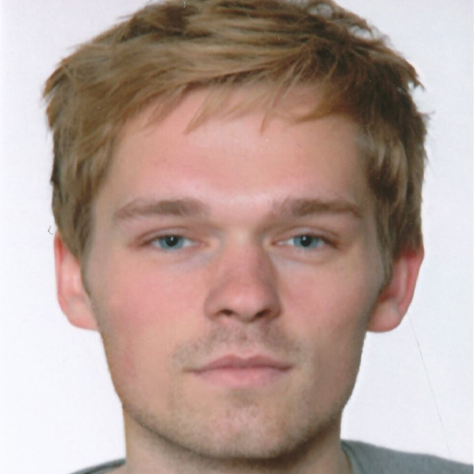

Impressum
Stand: Das Projekt "enviroCar-Analyser" wurde von Stundenten aus dem Kurs "Geosoftware II" des Instituts für Geoinformatik in Münster im Wintersemester 2013/2014 realisiert. Bei Problemen mit der Seite oder der Applikation stehen wir Ihnen gerne per Email zur Verfügung.
Die Mitglieder des Teams:
- Oliver Kosky
oliver.kosky@uni-muenster.de
- Johanna Möllmann

j.moellmann92@gmail.com
- Christian Peters

ch.peters@uni-muenster.de
- Nicholas Schiestel
n.schiestel@uni-muenster.de
- René Unrau
rene.unrau@uni-muenster.de
- Leon Vogel
leonmaximilianvogel@gmail.com
Die Mitglieder der Gruppe D